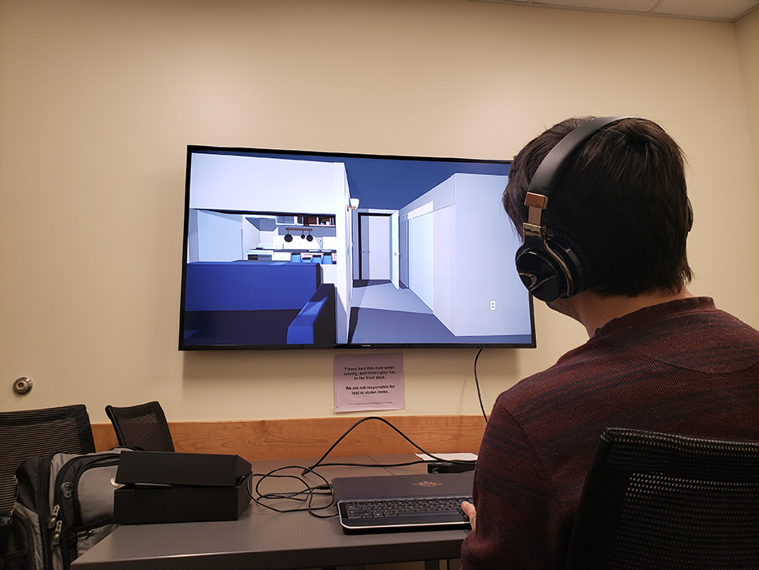

x
Main menu interface for "Number 2."
x
In "Number 2," you wake up in the early morning in a small apartment and given a goal.

x
How the bedroom appears in "Number 2" after the light is switched on. The first goal is shown at the top right.

x
Tasks in "Number 2" included making the bed. The first goal is listed at the top right.
x
Detail of the bedroom shelf in "Number 2."
I used both plain and textured surfaces and a combination of high and low-poly assets created in Maya and Unity.
x
Detail of the bedroom desk drawer in "Number 2."
Players could open almost all drawers to add to distraction and the desire to explore all areas.
One drawer was blocked to increase stress in some players.
x
The kitchen in "Number 2" from the entrance.
One of the goals is shown at the top right.
x
The Living Room in "Number 2" from the entrance.
One of the goals is shown at the top right.
x
Tasks in "Number 2" included making breakfast.
Prompts were displayed with the player moved the cross-hair to interactive objects.
x
View of the Living Room in "Number 2" while in the kitchen.
The current kitchen goal is shown at the top right.
x
The fridge and freezer in "Number 2" could be opened allowing players to access the eggs, milk, and orange juice needed to make breakfast.
I left most of the fridge empty to increase the stress in some players.
x
All of the cabinets in "Number 2" could be opened.
This adds to distraction and the desire to explore all areas.

x
One task path in "Number 2" was to make a bowl of cereal.
Since it involves taking the milk out of the fridge, the player will be tasked with checking to make sure they put the milk back.
Eventually, checking to see if they put the milk back will be the only thing they can do with obsessive and intrusive thoughts related to leaving the milk out appearing in the environment.
x
Another task path in "Number 2" was to cook eggs.
Since it involves turning on the stove, the player will be tasked with checking the stove.
Eventually, checking the stove will be the only thing they can do with obsessive and intrusive thoughts related to leaving the stove on appearing in the environment.
x
How the eggs appear when cooked and plated in "Number 2."
x
Detail of the living room bookshelves in "Number 2" after the books are fixed.
The experience begins with books that have fallen on the floor and when noticed, the only task the player can complete is to fix the books, even if that makes them late for work.
The "DREAM" letters turn into intrusive thoughts as players ignore certain tasks.
x
The bathroom in "Number 2" with the overall goal listed at the top right.
x
An example of an "intrusive thought" in "Number 2" if the player ignores the obsessive thought to check/turn off the stove.
To make the thoughts seem more intrusive than the player's general thoughts (shown above the visual frame and outside of the environment), they appear in the surrounding environment.
x
An example of an "intrusive thought" in "Number 2" if the player ignores the obsessive thought to check/put away the milk.
To make the thoughts seem more intrusive than the player's general thoughts (shown above the visual frame and outside of the environment), they appear in the surrounding environment.
x
An example of an "intrusive thought" in "Number 2" if the player ignores the obsessive thought to wash their hands.
To make the thoughts seem more intrusive than the player's general thoughts (shown above the visual frame and outside of the environment), they appear in the surrounding environment.
x
An example of an "intrusive thought" in "Number 2" if the player ignores the obsessive thought to wash their hands.
To make the thoughts seem more intrusive than the player's general thoughts (shown above the visual frame and outside of the environment), they appear in the surrounding environment.
x
Scene from "Number 3." Built to be an infinite, pointless loop, this was technically the only scene.

x
Playtester Owen plays an early version of "Number 2" in McCracken Hall.
x
A participant plays "Number 2" at Open Ohio's "Navigating Turbulence" exhibition in Baker Center on Feb. 27, 2019.

x
Turbulent Minds exhibited in Alden Library as part of Ohio Ohio's "Navigating Turbulence" exhibition.
- TURBULENT MINDS -
Turbulent Minds was a three-part exhibit that demonstrates symptoms of psychological conditions through the use of technology.
The first part had users experience auditory hallucinations.
They are prompted to wear headphones and have a conversation with another person for 3-5 min.
During the conversation, sounds start to play at random intervals, locations, volume, and frequencies.
Eventually, sounds from the environment are played back with similar randomness.
The participant feels the struggle of trying to hear and pay attention to the conversation as someone with this symptom might experience.
The second part had users experience some of the debilitating effects of Obsessive-Compulsive Disorder.
It is a playable PC game environment that appears as a small apartment.
The player wakes up in the game and given the goal to get ready and leave for work on time.
Certain environmental triggers will prompt the user to check on the stove, the lock, or whether they left the milk out.
They might get prompted to wash their hands or fix books that have fallen.
If the prompt is ignored, the prompt becomes more invasive leading to "intrusive thoughts" that appear in the environment and limit the ability to do anything until the original prompt is satisfied.
The third part was a representation of a time when I was depressed and suicidal.
Not all depression feels like sadness, sometimes it's a feeling of no motivation, feeling trapped, and wondering "what's the point?"
Using a Samsung Gear 360 headset and a controller, users moved through an endless dull hallway.
Eventually, they would feel bored, trapped, and unmotivated to continue and would remove the headset - in a way, ending the "game."
Collaborating with Dr. Brett J. Peters, the exhibit was shown as part of Open OHIO's Navigating Turbulence exhibition that brings art to public spaces for discussion of local issues.
TECHNOLOGY + MEDIUMS USED
SHOWN AT THE FOLLOWING...
CREDIT AND SPECIAL THANKS
In collaboration with:
Event Organizers:
Testers:
For support, training, testing, and inspiration:
For opportunities and support:
- Some stock audio by Adobe Audition Sound Effects.